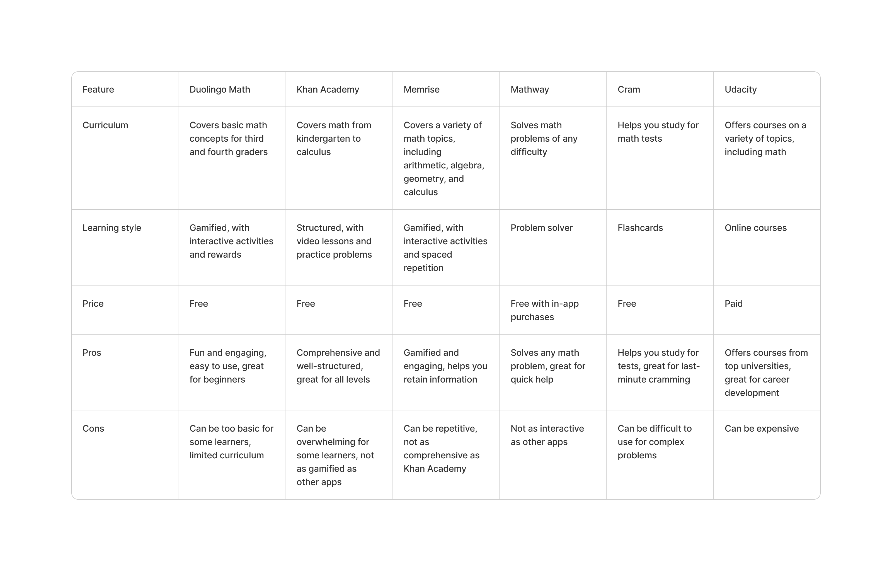

Create a solution that makes math learning fun and engaging for children. Describe a scenario of how a child might use the solution.
For this requirement, I have chosen to use the Design Thinking process. I selected this approach because it is an effective methodology and mindset for addressing complex issues, especially those that are centered around human needs. By using Design Thinking, I aim to find the best solution to this challenge in a user-centric way.
There are 5 Stages in the Design Thinking Process:
Empathize →Define → Ideate Design → Test
MathIQ is a gamified math learning app that uses a variety of techniques to make math fun and engaging for learners of all ages. The app offers bite-sized lessons that are tailored to the individual learner's progress, and it uses a variety of interactive activities and games to help learners practice and master new concepts.
My desk research has given me a new perspective on the online math learning industry. I have seen data that shows the challenges that many learners face when trying to learn math online. This has helped me to understand the problems from the majority's point of view, and it has inspired me to get involved in the industry and try to make a difference.
Key Insights from the Market Research

- Gamification: Kids Learning Apps uses gamification techniques to make learning math fun and motivating. For example, the app rewards learners with points, badges, and streaks for completing lessons and activities. This helps to keep learners engaged and motivated.
- Interactive activities: Learning Apps uses a variety of interactive activities to help learners practice and master new concepts. These activities include drag-and-drop puzzles, matching games, and multiple-choice questions. These activities help to make learning math more engaging and effective..
- Visual aids: Kids App uses a variety of visual aids to help learners understand new concepts. These aids include diagrams, animations, and real-world examples. These visual aids can be helpful for learners who are visual learners or who have difficulty understanding abstract concepts.
- Audio narration: Kids App offers audio narration for all of its lessons and activities. This can be helpful for learners who are auditory learners or who have difficulty reading. .
- Social features: Learning Apps allows learners to connect with friends and family and compete with them for points and badges. This can be a motivating factor for some learners. .
I have surveyed many people about why they have not tried online doctor consultations. The majority of respondents said that they "cannot trust online consultations."
After gathering insights from the research phase, I started working on the information architecture and user flows. I was able to skip pen and paper sketching because I had a clear understanding of the product's structure and functionality.
Information architecture (IA) is the practice of organizing and structuring information so that it is easy to find and use. In the context of kids learning apps, IA is essential for ensuring that the app is engaging and educational for young learners.
I first sketched out my ideas on paper. Then, I created a user flow and made dozens of corrections until I came up with the final one.
I believe that one of the best ways to start designing a great UI is to consume a lot of great designs. I had all of the wireframes ready, but the UI needs to be carefully crafted so that it is accessible to all users. I have not only looked at these screenshots, but I have also checked out every app in the same category and tried to understand how they make their apps easy to use.
These screens create the first impression of the overall app. They are the best place to showcase the app's data and how it can help users. Therefore, I am trying to highlight the main screens of the feature that can make users want to get started with Medic.
- Colors can affect children's emotions and behavior. Stimulating colors, such as red and orange, can increase activity levels, while calming colors, such as blue and green, can promote relaxation. When choosing colors for a kids' app, it is important to consider the intended effect of the app.
- Colors can help children learn. Bright and attractive colors can capture children's attention and make the learning process more enjoyable. For example, an app that teaches colors could use different colors for each object.
- Colors can help children navigate an app. Color coding can help children quickly and easily find what they are looking for in an app. For example, a navigation bar that uses different colors for each section can help children find the section they are interested in without getting lost.
- Colors can make an app more visually appealing. A well-designed color scheme can make an app more visually appealing and engaging for children. This can make children more likely to use the app and enjoy it.
Here is a detailed explanation of each element included in the Homescreen design:
- To introduce the app and its features: A splash screen can be a great way to introduce your app to kids and show them what they can expect. It can also be used to explain the app's features and how to use them.
- To create a positive first impression: The first impression is important for any app, but it's especially important for kids apps. A splash screen can help to create a positive first impression and make kids excited to use your app.
- Making the app easy to use: The onboarding process should make the app easy to use for kids. This means using simple language and avoiding jargon. It also means using clear and concise instructions.
Fact: Only 20% of kids apps offer a guest mode, which allows users to access the app without creating an account.
It is important to note that there are some concerns about user sign-up or sign-in in kids apps. Some parents are worried about the amount of data that is collected about their children. Others are concerned about the security of their children's accounts. It is important to be transparent about how you collect and use user data in your kids app. You should also take steps to protect your users' data from unauthorized access.
- Personalization: User sign-up or sign-in allows you to collect data about your users, such as their name, age, and interests. This data can be used to personalize the app experience for each user. For example, you could recommend content that is relevant to the user's interests or age group
- Analytics: User sign-up or sign-in data can be used to track how users are using your app. This data can be used to improve the app's features and make it more user-friendly.
- Visual appeal: The home screen should be visually appealing to kids. This means using bright colors, fun fonts, and engaging images.
- Easy to navigate: The home screen should be easy for kids to navigate. This means using large icons and clear labels.
- Use a limited number of icons: Kids have short attention spans, so it is important to use a limited number of icons on the home screen. This will make it easier for them to find what they are looking for.
- Use clear and concise labels: The labels for the icons should be clear and concise. This will help kids to understand what each icon represents.
- Settings screen: The settings screen can allow kids to customize the app to their own preferences. This could include things like the difficulty level, the language, or the sound effects. By being able to customize the app, kids are more likely to find it engaging and enjoyable to use.
- Achievements screen: The achievements screen can show kids how well they are doing in the app. This could include things like the number of levels they have completed, the number of stars they have earned, or the highest score they have achieved. By seeing their progress, kids are more likely to stay motivated and keep using the app.
- Users will find the information they want more easily with a more attractive and consistent layout
- Any doubts that the user has after signing up, they will be able to check through the FAQ that is in the “help” floating button. This will decrease the number of emails sent to the company
- The design will stand out from its competitors, giving users more confidence and legitimacy in the opinions they provide.